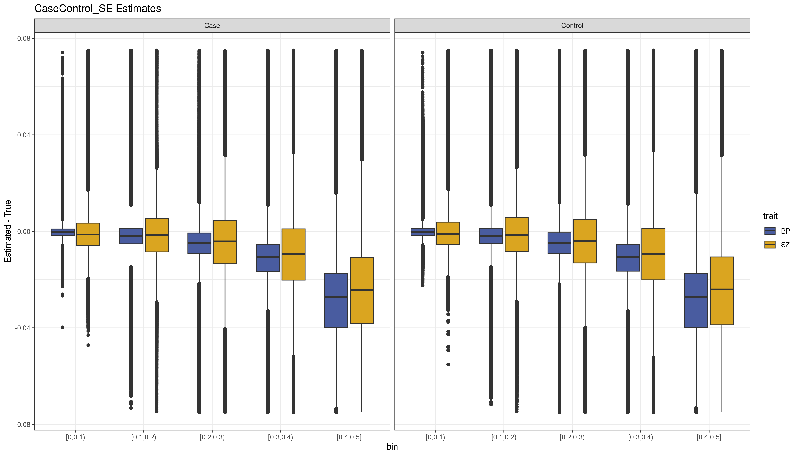
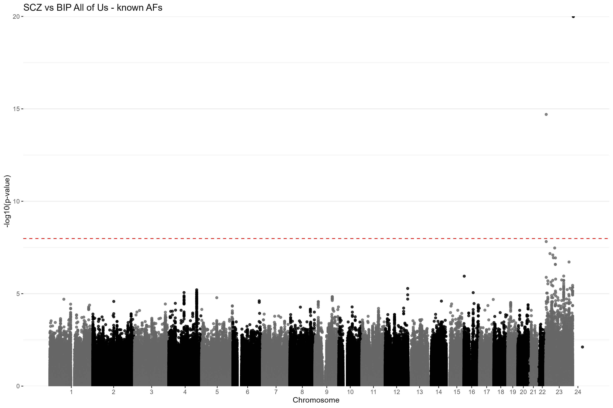
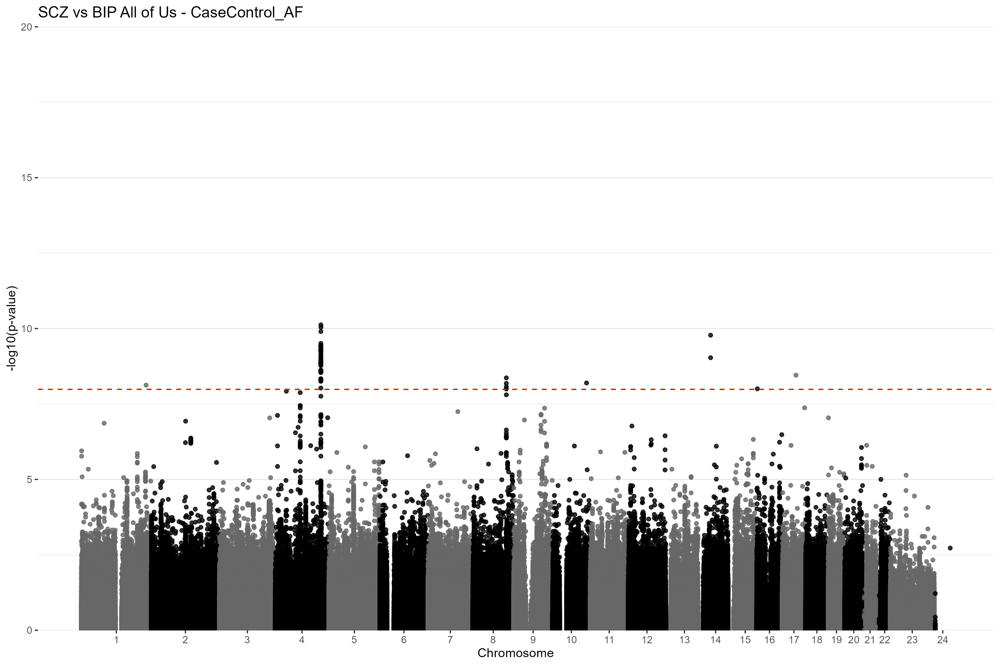
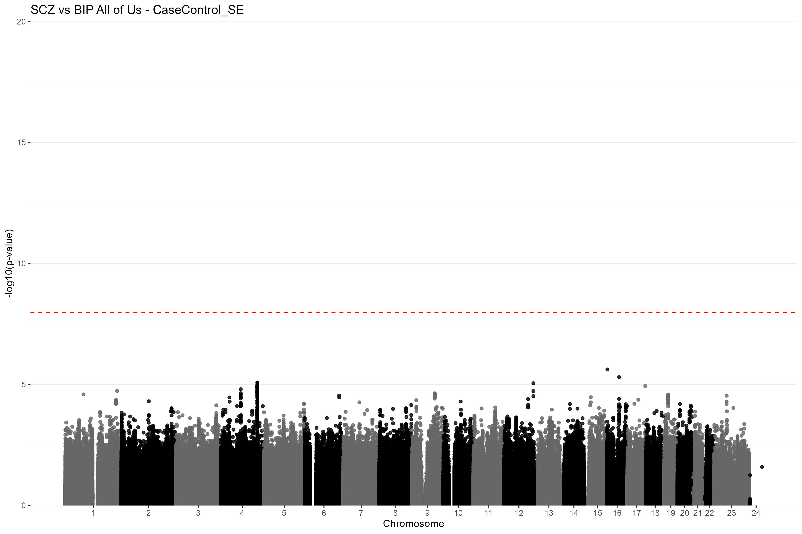
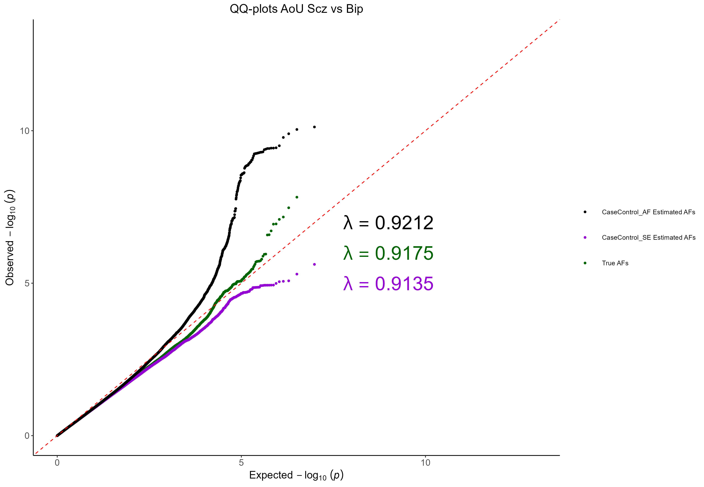
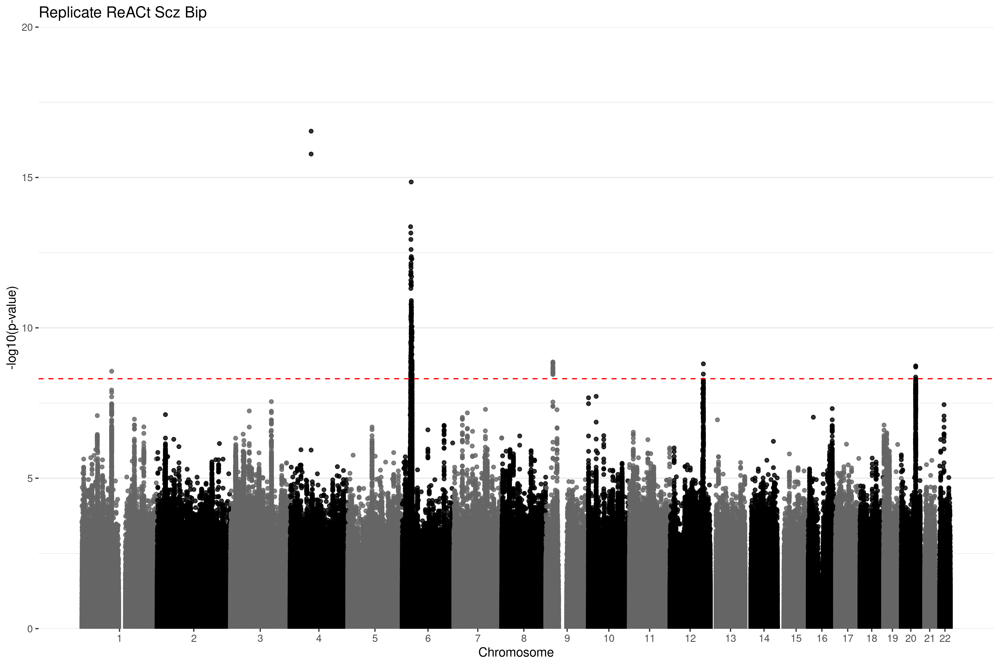

CaseControlAF_ccGWAS
Hayley Stoneman
2024-09-12
Source:vignettes/articles/CCAFE_CCGWAS.Rmd
CCAFE_CCGWAS.RmdIntroduction and motivation
In this vignette, I will demonstrate the workflow for using the R package CaseControlAF and perform secondary analyses using the output case and control AFs. Here, the secondary analysis will be a case-case GWAS (CC-GWAS). Additional details of CC-GWAS can be found in Chapter I: INTRODUCTION.
Brief overview of CC-GWAS
Briefly, CC-GWAS identifies genetic variants that have different AFs between two samples of cases with related (but different) traits or diseases. This could provide insight as to why a person might develop one trait instead of a closely related second trait. CC-GWAS was first introduced by Peyrot and Price in 2021. A second alternative framework to perform CC-GWAS was proposed by Yang et al. in 2022. Yang et al provided C-based software to perform this analysis as part of a larger software package called ReACt. I have adapted their code and framework and implemented it in R.
In this framework a logistic regression is run using only the AFs from the two case samples. However, it is important to differentiate the effects from trait-trait differences and population stratification. In this logistic regression of the two case samples, the effect sizes will include real genetic differences between trait 1 and trait 2 () as well as differences due to population stratification (). We assume that these two effects are independent such that:
To isolate the true trait-trait genetic differences, a regression between the two controls samples is run, to get an estimate of the stratification effect . Note that we also get a standard error for the estimate of stratification, and this can be used to remove variants for which the stratification effect cannot be reliably estimated.
The genetic effect from the trait-trait difference can then be obtained:
These case and control logistic regressions are carried out using the case and control genotype counts and the binary phenotype. Here I will compare the known case and control genotype counts (included in the summary statistics), those estimated using the SE (CaseControl_SE) and those estimated using total AF (CaseControl_AF).
Datasets
I will be using GWAS summary statistics from the All of Us Research Program All by All (AllxAll) tables. The All of Us Research Program recently made available to the Controlled Tier Access researchers the results from GWAS for thousands of phenotypes from the ~250,000 participants who have whole genome sequence data available. The AllxAll tables include the results of association testing for ~3,4000 phenotypes including physical measurements, lab measurements, phecodes, and electronic health record (EHR) sourced drugs and medications. The data is available in Hail Matrix Tables with the summary statistics by individual ancestry or following meta-analysis. Find more information about the AllxAll results here
In the original CC-GWAS paper by Peyrot and Price 2021, psychiatric traits were compared, including Schizophrenia (SZ) and Bipolar Disease (BP). Yang et al 2022 also compared these two traits.
In All of Us, GWAS was run for SZ (Phecode 295.1), with 584 cases and 98,402 controls. GWAS for BP (Phecode 296.1) was run with 2,865 cases and 92,758 controls. These two Phecodes exclude other psychiatric trait ICD codes in their case definitions, so there should be no overlap between case samples in the two traits. Here I will query the association summary statistics for these two GWAS, including the total AF, true case and control AFs, beta/OR, and SE of the log(OR).
Obtain datasets from All of Us Researcher Workbench
Here I will show the code used to obtain the summary statistics from these GWAS from the AllxAll tables. I obtain the case and control sample size, the case and control AFs, the total AF and allele count (AC), and the variant ID, beta, and SE values for each variant. Note that this code must be run through the Researcher Workbench after obtaining Controlled Tier Access. I am only showing the code used to obtain the BP data set (phenoname = 296.1), though the steps are identical just with a different phenotype name for SZ (phenoname = 295.1). The Researcher Workbench uses Jupyter Notebooks running Python 3.
# setting up packages
from datetime import datetime
import os
import gc
#for data handling and storage
import subprocess
import numpy as np
import pandas as pd
start = datetime.now()
# loading bokeh to show hail plots
from bokeh.resources import INLINE
import bokeh.io
from bokeh import *
bokeh.io.output_notebook(INLINE)
from bokeh.io import show, output_notebook
# Google cloud resources
from google.cloud import storage
# initializing hail
# setting hail tmp directory to WORKSPACE_BUCKET. This prevents hail to use HDFS and a risk of
# running out of space
# if there is not enough space on non-preemptible workers
# this may slow down I/O of large files but prevents scripts from crushing
import hail as hl
hl.init(default_reference = "GRCh38")
bucket = os.getenv('WORKSPACE_BUCKET') Read in Hail matrix table for the ACAF (single variant) data. I am using the EUR only data due to the small sample size.
SZ
- Cases EUR = 584
- Controls EUR = 98,402
BP
- Cases EUR = 2,865 cases
- Controls EUR = 92,758
Subset the data to only the desired phenotype by phenoname
Pheno = “296.1”
Bp_EUR = all_EUR.filter_cols(all_EUR.phenoname == Pheno)
Bp_EUR = Bp_EUR.entries()
# View the data set
Bp_EUR.show() Subset to only the desired columns
Bp_EUR_sub = bp_EUR.select('variant_id', 'n_cases', 'n_controls', 'BETA', 'SE', 'AF_case',
'AF_ctrl', 'AF_Allele2', 'AC_Allele2') Export the data to your Google bucket
Source code
Here is the source code used to perform the CC-GWAS and generate plots. The CC-GWAS code and helper functions have been adapted from the ReACt software, which was original written in C. The code can be found here.
# Helper functions
# Function to calculate the p-value of a wald statistic assuming normal distribution
calc_waldP <- function(beta, SE) {
z <- abs(beta/SE)
p_val <- 2*(1-pnorm(z))
return(p_val)
}
# function to calculate OR, SE, and p-value using a 2x2 table
# assumed to be using the AF of trait 1, AF of trait 2, and sample sizes
# DefFac is used to scale the allele counts calculated based on sample overlap
calc_ORStat <- function(AF1, N1, AF2, N2, DefFac) {
# first calculate the 2x2 tables of allele counts
a = AF1 * 2 * N1 * DefFac[1]
b = (1-AF1) * 2 * N1 * DefFac[1]
c = AF2 * 2 * N2 * DefFac[2]
d = (1-AF2) * 2 * N2 * DefFac[2]
OR <- (a*d)/(b*c)
SE <- sqrt(1/a + 1/b + 1/c + 1/d)
p <- calc_waldP(log(OR), SE)
return(data.frame(OR = OR, SE = SE, p = p))
}
get_z <- function(OR1, OR2, SE1, SE2, Zthres) {
N12 = 0 # number of times Z1 and Z2 both non zero
SumZ12 = 0 # sum of Z1*Z2
SqrSumZ1 = 0 # sum of Z1^2
SqrSumZ2 = 0 # sum of Z2^2
for(i in 1:length(OR1)) {
# set z to Log(OR)/SE as long as OR != 0, else set it to 0
z1 = ifelse(OR1[i]*SE1[i] != 0, log(OR1[i])/SE1[i], 0.0)
z2 = ifelse(OR2[i]*SE2[i] != 0, log(OR2[i])/SE2[i], 0.0)
# if |z| > zthreshold set to zero
z1 = ifelse(z1 > Zthres, 0.0, z1)
z2 = ifelse(z2 > Zthres, 0.0, z2)
# if product is not zero then update z square values
if(z1*z2 != 0) {
N12 <- N12 + 1
SumZ12 <- SumZ12 + z1*z2
SqrSumZ1 <- SqrSumZ1 + z1^2
SqrSumZ2 <- SqrSumZ2 + z2^2
}
}
return(c(N12, SumZ12, SqrSumZ1, SqrSumZ2))
}
# helper function to calculate log-likelihood for a bivariate normal distribution given the correlation coefficient rho and total smaple size N
calc_logLikelihood <- function(x2, y2, xy, rho, N, Zthres) {
l_0 <- - N/2 * log(1 - rho^2) - (x2 - 2*xy*rho + y2)/(2 * (1 - rho^2))
l_1 <- N*log(pbivnorm(-Zthres, -Zthres, rho) +
pbivnorm(Zthres, Zthres, rho) +
pbivnorm(Zthres, -Zthres, rho) +
pbivnorm(-Zthres, Zthres, rho))
return(l_0 - l_1)
}
calc_corrR <- function(OR1, OR2, SE1, SE2, Zthres) {
bestRho = 0.0
Zs <- get_z(OR1, OR2, SE1, SE2, Zthres)
maxLogL = calc_logLikelihood(x2 = Zs[3], y2 = Zs[4], xy = Zs[2], rho = bestRho, N = Zs[1],
Zthres = Zthres)
for(rho in seq(from = 0.001, to = .999, by = .001)) {
tmpLogL = calc_logLikelihood(x2 = Zs[3], y2 = Zs[4], xy = Zs[2], rho = rho, N = Zs[1],
Zthres = Zthres)
if(tmpLogL > maxLogL) {
maxLogL = tmpLogL
bestRho = rho
}
}
return(bestRho)
}
# main helper function for CC-GWAS
# uses the case and control AF for each of the two traits as well as the case and control
# sample sizes of each trait
calc_ccgwas <- function(trait1_AF_case, trait2_AF_case, trait1_N_case, trait2_N_case,
trait1_AF_control, trait2_AF_control, trait1_N_control, trait2_N_control,
N_caseInCase = NA, N_controlInControl = NA, N_caseInControl = NA,
Zthreshold = 0.0, trait1_OR, trait2_OR, trait1_SE, trait2_SE) {
# first define the sample overlap matrices
if(length(N_caseInCase) == 0) {
N_caseInCase <- matrix(data = c(trait1_N_case + trait2_N_case, 0, 0, trait1_N_case + trait2_N_case), nrow = 2)
}
if(length(N_controlInControl) == 0) {
N_controlInControl <- matrix(data = c(trait1_N_control + trait2_N_control, 0, 0,
trait1_N_control + trait2_N_control), nrow = 2)
}
if(length(N_caseInControl) == 0) {
N_caseInControl <- matrix(data = c(0, 0, 0, 0), nrow = 2)
}
# correct for sample overlap by calculating correlation
if(Zthreshold > 0.0) {
CorrR = calc_corrR(OR1 = trait1_OR, OR2 = trait2_OR, SE1 = trait1_SE,
SE2 = trait2_SE, Zthres = Zthreshold)
print(paste0("Est. sample overlap: ", CorrR))
# update sample overlap matrices
N_caseInCase[1,2] = sqrt(N_caseInCase[1,1]*N_caseInCase[2,2])*CorrR
N_caseInCase[2,1] = sqrt(N_caseInCase[1,1]*N_caseInCase[2,2])*CorrR
N_controlInControl[1,2] = sqrt(N_controlInControl[1,1]*N_controlInControl[2,2])*CorrR
N_controlInControl[2,1] = sqrt(N_controlInControl[1,1]*N_controlInControl[2,2])*CorrR
}
# now we can calculate the default factor for trait 1 and 2 in cases and controls
DefCase <- c((N_caseInCase[1,1]/(N_caseInCase[1,1] + N_caseInCase[1,2])),
(N_caseInCase[2,2]/(N_caseInCase[2,2] + N_caseInCase[2,1])))
DefControl <- c((N_controlInControl[1,1]/(N_controlInControl[1,1] + N_controlInControl[1,2])),
(N_controlInControl[2,2]/(N_controlInControl[2,2] + N_controlInControl[2,1])))
# now we calculate the OR, SE, and p for cases and controls separately
# controls are used for analysis of stratification
# overall final CC-GWAS result OR is exp(log(OR_case) - log(OR_control))
OR_stat_control <- calc_ORStat(trait1_AF_control, trait1_N_control, trait2_AF_control, trait2_N_control, DefControl)
OR_stat_case <- calc_ORStat(trait1_AF_case, trait1_N_case, trait2_AF_case, trait2_N_case, DefCase)
OR <- exp(log(OR_stat_case$OR)-log(OR_stat_control$OR))
SE <- OR_stat_case$SE
p <- calc_waldP(log(OR), SE)
return(data.frame(OR = OR, SE = SE, p = p,
OR_control = OR_stat_control$OR,
SE_control = OR_stat_control$SE))
}
#' @title CC_GWAS
#' @description
#' This is a function to run a case-case GWAS using the framework introduced in the ReACt package. The method will first filter out any SNPs with NA in the case or control AF. It will then remove any SNPs that are not present in both datasets. Finally, it will remove duplicate SNPs, by defualt keeping the first record. Then the CC-GWAS will be run.
#'
#' @param trait1_data a dataframe containing the chromosome, position, case AF, and control AF for each SNP for trait 1
#' @param trait2_data a dataframe containing the chromosome, position, case AF, and control AF for each SNP for trait 2
#' @param trait1_N_case the number of cases in trait 1 dataset
#' @param trait1_N_control the number of controls in trait 1 dataset
#' @param trait2_N_case the number of cases in trait 2 dataset
#' @param trait2_N_control the number of controls in trait 2 dataset
#' @param AF_case_colname a string with the name for the column containing the case AF in both trait 1 and trait 2 datasets; default: "AF_case"
#' @param AF_control_colname a string with the name for the column containing the control AF in both trait 1 and trait 2 datasets; default: "AF_control"
#' @param chromosome_colname a string with the name for the column containing the SNP chromosome number in both trait 1 and trait 2 datasets; default: "chr"
#' @param position_colname a string with the name for the column containing the SNP position in both trait 1 and trait 2 datasets; default: "pos"
#' @param id_colname a string containing the id for each SNP in both trait 1 and trait 2 datasets; default: NA. If NA, then an ID column will be added and used for data filtering
#' @param OR_colname a string with the name for the column with the OR from the GWAS summary statistics for each trait
#' @param SE_colname a string with the name for the column with the SE from the GWAS summary statistics for each trait
#' @param N_caseInCase a 2x2 matrix where the upper left cell (a) is the number of cases in study 1 and the lower right cell (d) is the number of cases in study 2. Cells b and c are the number of overlapping cases; Default = NA - if left as NA algorithm will assume no sample overlap
#' @param N_controlInControl a 2x2 matrix where the upper left cell (a) is the number of controls in study 1 and the lower right cell (d) is the number of controls in study 2. Cells b and c are the number of overlapping controls; Default = NA - if left as NA algorithm will assume no sample overlap
#' @param N_caseInControl a 2x2 matrix of the number of cases in the control sample. The upper right cell (b) represents the number of cases from trait 1 that are present as controls for trait 2. The lower left cell (c) is the number of cases from trait 2 that are included as controls for trait 1. Cells a and d should be 0; Default = NA - if left as NA algorithm will assume no sample overlap
#' @param Zthreshold value for the z-statistic threshold. If Zthreshold = 0 then will not perform correction for sample overlap (In order to run correction for sample overlap, OR and SE in each trait's data is required). Yang et al suggest using a threshold of z=1.0; however, this will overlap user input sample sizes. If exact sample sizes and overlap is known, this parameter should be left at 0.
#' @note
#' trait1_data and trait2_data need to have the same column names for chromosome, position, OR, SE, and case and control AFs.
#' @return returns a dataframe with the original data (where each dataset's original columns with have .trait1 or .trait2 appended to its column name) and three additional columns for the CC-GWAS results: OR, SE, p
#' equal to the number of variants
#' @import tidyverse
#' @import pbivnorm
#' @export
CC_GWAS <- function(trait1_data, trait2_data,
AF_case_colname = "AF_case", AF_control_colname = "AF_control",
trait1_N_case, trait1_N_control, trait2_N_case, trait2_N_control,
chromosome_colname = "chr", position_colname = "pos", id_colname = NA,
A1_colname = "A1", A2_colname = "A2", rsid_colname = "RSID", OR_colname = "OR",
SE_colname = "SE",
N_caseInCase = NA, N_controlInControl = NA, N_caseInControl = NA,
Zthreshold = 0.0) {
require(tidyverse)
require(pbivnorm)
# First need to make sure there are no SNPs with NA is the case or control AFs
NA_case_1 = length(which(is.na(trait1_data[,c(AF_case_colname)])))
NA_case_2 = length(which(is.na(trait2_data[,c(AF_case_colname)])))
NA_control_1 = length(which(is.na(trait1_data[,c(AF_control_colname)])))
NA_control_2 = length(which(is.na(trait2_data[,c(AF_control_colname)])))
NA_rm1 = 0
NA_rm2 = 0
if(NA_case_1 > 0 | NA_control_1 > 0) {
trait1_data_filt <- trait1_data[!is.na(trait1_data[,c(AF_case_colname)]) &
!is.na(trait1_data[,c(AF_control_colname)]),]
NA_rm1 = nrow(trait1_data)-nrow(trait1_data_filt)
trait1_data <- trait1_data_filt
rm(trait1_data_filt)
}
if(NA_case_2 > 0 | NA_control_2 > 0) {
trait2_data_filt <- trait2_data[!is.na(trait2_data[,c(AF_case_colname)]) &
!is.na(trait2_data[,c(AF_control_colname)]),]
NA_rm2 = nrow(trait2_data)-nrow(trait2_data_filt)
trait2_data <- trait2_data_filt
rm(trait2_data_filt)
}
rm(NA_case_1)
rm(NA_case_2)
rm(NA_control_1)
rm(NA_control_2)
# now make sure that both datasets have the same variants
if(is.na(id_colname)) {
trait1_data$id <- paste0(trait1_data[,c(chromosome_colname)], ":",
trait1_data[,c(position_colname)])
trait2_data$id <- paste0(trait2_data[,c(chromosome_colname)], ":",
trait2_data[,c(position_colname)])
if(nrow(trait1_data) < nrow(trait2_data)) {
overlap <- trait1_data$id[which(trait1_data$id %in% trait2_data$id)]
} else {
overlap <- trait2_data$id[which(trait2_data$id %in% trait1_data$id)]
}
id_colname = "id"
} else {
colnames(trait1_data)[which(colnames(trait1_data) == id_colname)] = "id"
colnames(trait2_data)[which(colnames(trait2_data) == id_colname)] = "id"
if(nrow(trait1_data) < nrow(trait2_data)) {
overlap <- trait1_data$id[which(trait1_data$id %in% trait2_data$id)]
} else {
overlap <- trait2_data$id[which(trait2_data$id %in% trait1_data$id)]
}
}
overlap_rm1 = nrow(trait1_data)-length(overlap)
overlap_rm2 = nrow(trait2_data)-length(overlap)
trait1_data <- trait1_data %>% filter(id %in% overlap)
trait2_data <- trait2_data %>% filter(id %in% overlap)
# now keep only distinct
trait1_data_filt <- trait1_data %>% distinct(id, .keep_all = T)
trait2_data_filt <- trait2_data %>% distinct(id, .keep_all = T)
distinct_rm1 = nrow(trait1_data) - nrow(trait1_data_filt)
distinct_rm2 = nrow(trait2_data) - nrow(trait2_data_filt)
trait1_data = trait1_data_filt
rm(trait1_data_filt)
trait2_data = trait2_data_filt
rm(trait2_data_filt)
nRemoved <- data.frame(dataset = c(1, 2),
NA_removed = c(NA_rm1, NA_rm1),
overlap_removed = c(overlap_rm1, overlap_rm2),
distinct_removed = c(distinct_rm1, distinct_rm2))
print(("Removed the following number of variants due to NAs in AFs, SNPs not in both datasets, or duplicate SNPs:"))
print(nRemoved)
# rename columns so I can use dplyr to select desired ones for output
colnames(trait1_data)[which(colnames(trait1_data) == chromosome_colname)] = "chr"
colnames(trait1_data)[which(colnames(trait1_data) == position_colname)] = "pos"
colnames(trait1_data)[which(colnames(trait1_data) == rsid_colname)] = "RSID"
colnames(trait2_data)[which(colnames(trait2_data) == chromosome_colname)] = "chr"
colnames(trait2_data)[which(colnames(trait2_data) == position_colname)] = "pos"
colnames(trait2_data)[which(colnames(trait2_data) == rsid_colname)] = "RSID"
if(AF_case_colname != "AF_case") {
trait1_data$AF_case <- trait1_data[,c(AF_case_colname)]
trait2_data$AF_case <- trait2_data[,c(AF_case_colname)]
}
if(AF_control_colname != "AF_control") {
trait1_data$AF_control <- trait1_data[,c(AF_control_colname)]
trait2_data$AF_control <- trait2_data[,c(AF_control_colname)]
}
if(A1_colname != "A1") {
trait1_data$A1 <- trait1_data[,c(A1_colname)]
trait2_data$A1 <- trait2_data[,c(A1_colname)]
}
if(A2_colname != "A2") {
trait1_data$A2 <- trait1_data[,c(A2_colname)]
trait2_data$A2 <- trait2_data[,c(A2_colname)]
}
if(OR_colname != "OR") {
trait1_data$OR <- trait1_data[,c(OR_colname)]
trait2_data$OR <- trait2_data[,c(OR_colname)]
}
if(SE_colname != "SE") {
trait1_data$SE <- trait1_data[,c(SE_colname)]
trait2_data$SE <- trait2_data[,c(SE_colname)]
}
# make sure trait1 and trait2 are in the same order
if(nrow(trait1_data) != nrow(trait2_data)) {
stop("Number of SNPs doesn't match")
}
combined <- trait1_data %>% inner_join(trait2_data, by = c("id" = "id"),
suffix = c(".trait1", ".trait2"))
# make sure alleles match (if they don't switch allele in trait 2 to match trait 1)
combined[which(combined$A1.trait1 != combined$A1.trait2), ]$AF_case.trait2 <- 1-combined[which(combined$A1.trait1 != combined$A1.trait2), ]$AF_case.trait2
combined[which(combined$A1.trait1 != combined$A1.trait2), ]$AF_control.trait2 <- 1-combined[which(combined$A1.trait1 != combined$A1.trait2), ]$AF_control.trait2
gc()
combined <- as.data.frame(combined)
# run the actual CC-GWAS using the cleaned datasets
results <- calc_ccgwas(trait1_AF_case = combined[,"AF_case.trait1"],
trait2_AF_case = combined[,"AF_case.trait2"],
trait1_AF_control = combined[,"AF_control.trait1"],
trait2_AF_control = combined[,"AF_control.trait2"],
trait1_N_case = trait1_N_case,
trait2_N_case = trait2_N_case,
trait1_N_control = trait1_N_control,
trait2_N_control = trait2_N_control,
trait1_OR = combined[,"OR.trait1"],
trait2_OR = combined[,"OR.trait2"],
trait1_SE = combined[,"SE.trait1"],
trait2_SE = combined[,"SE.trait2"],
Zthreshold = Zthreshold,
N_controlInControl = N_controlInControl,
N_caseInCase = N_caseInCase,
N_caseInControl = N_caseInControl)
meta_cols <- c("chr.trait1", "pos.trait1", "RSID.trait1", "A1.trait1", "A2.trait1",
"AF_case.trait1", "AF_case.trait2", "AF_control.trait1",
"AF_control.trait2")
toreturn <- combined[,meta_cols]
colnames(toreturn)[1:5] <- c("chr", "pos", "RSID", "A1", "A2")
toreturn <- toreturn %>% cbind(results)
return(toreturn)
}
# plotting code
CC_GWAS_plot <- function(results, chromosome_colname = "chr", position_colname = "pos",
title = "CC-GWAS") {
# first make sure the columns have the same names (chr, pos) so I can use tidyverse
colnames(results)[which(colnames(results) == chromosome_colname)] = "chr"
colnames(results)[which(colnames(results) == position_colname)] = "pos"
results$chr <- as.numeric(results$chr)
# First need to claculate the cumulatative position of the SNP
results <- results %>%
group_by(chr) %>%
summarise(chr_length = max(pos)) %>%
# calculate the cumulative position of each chromosome
mutate(tot = cumsum(as.numeric(chr_length)) - chr_length) %>%
select(-chr_length) %>%
# add this info to the initial dataset
left_join(results, ., by=c("chr" = "chr")) %>%
# add cumulative position of each SNP
arrange(chr, pos) %>%
mutate(pos_cum = pos + tot)
# need to prepare x-axis so we can show the chromosome number not the SNP position
axisdf = results %>% group_by(chr) %>%
summarize(center = (max(pos_cum) + min(pos_cum))/2)
plot <- ggplot(results, aes(x = pos_cum, y = -log10(p))) +
geom_point(aes(color = as.factor(chr)), alpha = 0.8, size = 1.3) +
scale_color_manual(values = rep(c("grey40", "black"), 22)) +
scale_x_continuous(label = axisdf$chr, breaks = axisdf$center) +
scale_y_continuous(expand = c(0,0)) +
geom_hline(yintercept = -log10(0.05/nrow(results)), linetype = "dashed", color = "red") +
xlab("Chromosome") +
ylab("-log10(p-value)") +
ggtitle(title) +
theme_bw() +
theme(
legend.position = "none",
panel.border = element_blank(),
panel.grid.major.x = element_blank(),
panel.grid.minor.x = element_blank()
)
return(plot)
}CC-GWAS Analysis
set.seed(1)
setwd("C:/Users/HayBa/Documents/Graduate School/GeneticPredisposition/CC-GWAS/")
library(tidyverse)
library(scales)
library(DescTools)
library(data.table)
library(CaseControlAF)Load in data and format as needed
sz <- read.delim("/home/wolffha/CC-GWAS/AoU/295.1/pheno_295.1_EUR.tsv.gz")
bp <- read.delim("/home/wolffha/CC-GWAS/AoU/296.1/pheno_296.1_EUR.tsv.gz")
nCase_sz <- 584
nControl_sz <- 98402
nCase_bp <- 2865
nControl_bp <- 92758
nTot_sz <- nCase_sz + nControl_sz
nTot_bp <- nCase_bp + nControl_bp
# colnames:
# locus | alleles | phenoname | variant+id | n_cases | n_controls | BETA
# SE | AF_case | AF_ctrl | AF_Allele2 | AC_Allele2
colnames(sz) <- c("locus", "alleles", "phenoname", "variant_id", "n_cases", "n_controls",
"BETA", "SE", "true_AF_case", "true_AF_control", "AF_Allele2", "AC_Allele2")
colnames(bp) <- c("locus", "alleles", "phenoname", "variant_id", "n_cases", "n_controls",
"BETA", "SE", "true_AF_case", "true_AF_control", "AF_Allele2", "AC_Allele2")
# remove any variants with NAs
sz <- sz[complete.cases(sz),]
bp <- bp[complete.cases(bp),]
# remove variants with Case and Control MAC < 40 - per AoU requirements
# calculate MAF
sz$maf_case <- sapply(sz$true_AF_case, function(x) ifelse(x > .5, 1-x, x))
sz$maf_control <- sapply(sz$true_AF_control, function(x) ifelse(x > .5, 1-x, x))
bp$maf_case <- sapply(bp$true_AF_case, function(x) ifelse(x > .5, 1-x, x))
bp$maf_control <- sapply(bp$true_AF_control, function(x) ifelse(x > .5, 1-x, x))
# calculate AC columns
sz$MAC_case <- sz$maf_case*nCase_sz*2
sz$MAC_control <- sz$maf_control*nControl_sz*2
bp$MAC_case <- bp$maf_case*nCase_bp*2
bp$MAC_control <- bp$maf_control*nControl_bp*2
sz <- sz[sz$MAC_case > 40 & sz$MAC_control > 40, ]
bp <- bp[bp$MAC_case > 40 & bp$MAC_control > 40, ]
# setup the dataframes as needed:
# need chromosome and position columns from locus
sz$id <- sz$locus
sz <- sz %>%
separate(locus, into = c("chr", "pos"), sep = ":")
sz$chr <- sub("chr", "", sz$chr)
bp$id <- bp$locus
bp <- bp %>%
separate(locus, into = c("chr", "pos"), sep = ":")
bp$chr <- sub("chr", "", bp$chr)
sz[sz$chr == "X", ]$chr <- 23
sz[sz$chr == "Y", ]$chr <- 24
bp[bp$chr == "X", ]$chr <- 23
bp[bp$chr == "Y", ]$chr <- 24
bp$chr <- as.numeric(bp$chr)
bp$pos <- as.numeric(bp$pos)
sz$chr <- as.numeric(sz$chr)
sz$pos <- as.numeric(sz$pos)
# now need allele1 and allele2
sz <- sz %>%
mutate(alleles = str_extract(alleles, "\\[(.*?)\\]"),
alleles = str_remove_all(alleles, "[\\[\\]\"\\s]")) %>%
separate(alleles, into = c("A1", "A2"), sep = ",")
bp <- bp %>%
mutate(alleles = str_extract(alleles, "\\[(.*?)\\]"),
alleles = str_remove_all(alleles, "[\\[\\]\"\\s]")) %>%
separate(alleles, into = c("A1", "A2"), sep = ",")
sz$RSID <- sz$variant_id
bp$RSID <- bp$variant_id
sz$OR <- exp(sz$BETA)
bp$OR <- exp(bp$BETA)
sz <- as.data.frame(sz)
bp <- as.data.frame(bp)Estimate the case and control AFs using CaseControl_SE and CaseControl_AF
# get case and control AF using SE
sz <- cbind(sz, CaseControl_SE(N_case = nCase_sz,
N_control = nControl_sz,
OR = exp(sz$BETA),
SE = sz$SE))
bp <- cbind(bp, CaseControl_SE(N_case = nCase_bp,
N_control = nControl_bp,
OR = exp(bp$BETA),
SE = bp$SE))
sz <- as.data.frame(sz)
bp <- as.data.frame(bp)
# get case and control AF using AF
sz <- cbind(sz, CaseControl_AF(N_case = nCase_sz,
N_control = nControl_sz,
OR = sz$OR,
AF_population = sz$AF_Allele2))
bp <- cbind(bp, CaseControl_AF(N_case = nCase_bp,
N_control = nControl_bp,
OR = bp$OR,
AF_population = bp$AF_Allele2))
sz <- as.data.frame(sz)
bp <- as.data.frame(bp)Let’s examine the estimated AFs compared to the true AFs
CaseControl_AF estimates
sz$maf <- (sz$maf_case*nCase_sz + sz$maf_control*nControl_sz)/(nCase_sz + nControl_sz)
bp$maf <- (bp$maf_case*nCase_bp + bp$maf_control*nControl_bp)/(nCase_bp + nControl_bp)
breaks <- seq(0.0, 0.5, by = 0.1)
sz$bin <- cut(sz$maf, breaks = breaks, include.lowest = T, right = FALSE)
bp$bin <- cut(bp$maf, breaks = breaks, include.lowest = T, right = FALSE)
AFdata <- data.frame(trueMAF = c(sz$true_AF_case, sz$true_AF_control, bp$true_AF_case,
bp$true_AF_control),
estMAF = c(sz$AF_case, sz$AF_control, bp$AF_case, bp$AF_control),
bin = c(sz$bin, sz$bin, bp$bin, bp$bin),
trait = c(rep("SZ", nrow(sz)*2), rep("BP", nrow(bp)*2)),
status = c(rep("Case", nrow(sz)), rep("Control", nrow(sz)),
rep("Case", nrow(bp)), rep("Control", nrow(bp))))
p_AF <- ggplot(AFdata, aes(x = bin, y = (estMAF-trueMAF), fill = trait)) +
geom_boxplot() +
scale_fill_manual(values = c("#495CA0", "goldenrod")) +
facet_wrap(~status) +
ggtitle("CaseControl_AF Estimates") +
theme_bw() +
ylim(c(-0.075, 0.075)) +
ylab("Estimated - True")
ggsave(plot = p_AF, filename = "szbp_CaseControl_AF_boxplot.png", width = 14, height = 8,
units = "in") Figure
1. The bias (Estimated MAF - True MAF) for the variants by MAF
bin (x-axis) for each data set estimated using CaseControl_AF. We see
that overall the estimates are very accurate (i.e. the bias is close to
0). For the cases, which have much smaller sample size, there is more
variability in the estimates.
Figure
1. The bias (Estimated MAF - True MAF) for the variants by MAF
bin (x-axis) for each data set estimated using CaseControl_AF. We see
that overall the estimates are very accurate (i.e. the bias is close to
0). For the cases, which have much smaller sample size, there is more
variability in the estimates.
CaseControl_SE estimates
SEdata <- data.frame(trueMAF = c(sz$maf_case, sz$maf_control, bp$maf_case, bp$maf_control),
estMAF = c(sz$MAF_case, sz$MAF_control, bp$MAF_case, bp$MAF_control),
bin = c(sz$bin, sz$bin, bp$bin, bp$bin),
trait = c(rep("SZ", nrow(sz)*2), rep("BP", nrow(bp)*2)),
status = c(rep("Case", nrow(sz)), rep("Control", nrow(sz)),
rep("Case", nrow(bp)), rep("Control", nrow(bp))))
p_SE <- ggplot(SEdata, aes(x = bin, y = (estMAF-trueMAF), fill = trait)) +
geom_boxplot() +
scale_fill_manual(values = c("#495CA0", "goldenrod")) +
facet_wrap(~status) +
ggtitle("CaseControl_SE Estimates") +
theme_bw() +
ylim(c(-0.075, 0.075)) +
ylab("Estimated - True")
ggsave(plot = p_SE, filename = "szbp_CaseControl_SE_boxplot.png", width = 14, height = 8,
units = "in")Figure 2. The bias (Estimated MAF - True MAF) for the variants by MAF bin (x-axis) for each data set estimated using CaseControl_SE. We see that the estimated MAF has increasing bias for the larger MAF bins. This is true of both SZ and BP.
We see that overall results are consistent with those seen in Chapter III simulations and real data. The CaseControl_AF results are quite accurate (Figure 1), the CaseControl_SE results are biased at higher MAFs (Figure 2).We also see the same trend where larger case sample sizes have overall smaller SEs, which results in increased bias, which is why the Bipolar () CaseControl_SE estimates are more biased than the Schizophrenia () CaseControl_SE estimates.
Define sample overlap matrices
# a is N is study 1, d is N in study 2, b = c = number overlapping cases
case_in_case <- matrix(data = c(nCase_sz, 0, 0, nCase_bp), nrow = 2)
# a in N control in study 1, d is number of controls in study 2, b = c = overlapping controls
control_in_control <- matrix(data = c(nControl_sz, nControl_bp, nControl_bp, nControl_bp), nrow = 2)
# a = d = 0; b is number cases in trait 1 that are controls for trait 2; c is number of cases from trait 2 that are controls as trait 1
case_in_control <- matrix(data = c(0, 0, 0, 0), nrow = 2)Run CC-GWAS using different case and control AFs:
- true known case and control AFs
- CaseControl_AF estimated case and control AFs
- CaseControl_SE estimated case and control AFs
Using known AFs
res_true_af <- CC_GWAS(trait1_data = sz,
trait2_data = bp,
trait1_N_case = nCase_sz,
trait2_N_case = nCase_bp,
trait1_N_control = nControl_sz,
trait2_N_control = nControl_bp,
AF_case_colname = "true_AF_case",
AF_control_colname = "true_AF_control",
chromosome_colname = "chr",
position_colname = "pos",
id_colname = "id",
A1_colname = "A1",
A2_colname = "A2",
rsid_colname = "RSID",
OR_colname = "OR",
SE_colname = "SE",
N_caseInCase = case_in_case,
N_controlInControl = control_in_control,
N_caseInControl = case_in_control,
Zthreshold = 1.0)
CC_GWAS_plot(results = res_true_af, title = "SCZ vs BIP All of Us - known AFs")Figure 3. Manhattan plot of the CC-GWAS results using the known case and control AFs for SZ and BP. The red dashed line is the Bonferroni-corrected genome-wide significance threshold. Chromosome 23 is the X chromosome and chromosome 24 is the Y chromosome.
Using CaseControl_AF
res_af <- CC_GWAS(trait1_data = sz,
trait2_data = bp,
trait1_N_case = nCase_sz,
trait2_N_case = nCase_bp,
trait1_N_control = nControl_sz,
trait2_N_control = nControl_bp,
AF_case_colname = "AF_case",
AF_control_colname = "AF_control",
chromosome_colname = "chr",
position_colname = "pos",
id_colname = "id",
A1_colname = "A1",
A2_colname = "A2",
rsid_colname = "RSID",
OR_colname = "OR",
SE_colname = "SE",
N_caseInCase = case_in_case,
N_controlInControl = control_in_control,
N_caseInControl = case_in_control,
Zthreshold = 1.0)
CC_GWAS_plot(results = res_af, title = "SCZ vs BIP All of Us - CaseControl_AF")Figure 4. Manhattan plot of the CC-GWAS results using the CaseControl_AF estimated case and control AFs for SZ and BP. The red dashed line is the Bonferroni-corrected genome-wide significance threshold. Chromosome 23 is the X chromosome and chromosome 24 is the Y chromosome.
Using CaseControl_SE
res_se <- CC_GWAS(trait1_data = sz,
trait2_data = bp,
trait1_N_case = nCase_sz,
trait2_N_case = nCase_bp,
trait1_N_control = nControl_sz,
trait2_N_control = nControl_bp,
AF_case_colname = "MAF_case",
AF_control_colname = "MAF_control",
chromosome_colname = "chr",
position_colname = "pos",
id_colname = "id",
A1_colname = "A1",
A2_colname = "A2",
rsid_colname = "RSID",
OR_colname = "OR",
SE_colname = "SE",
N_caseInCase = case_in_case,
N_controlInControl = control_in_control,
N_caseInControl = case_in_control,
Zthreshold = 1.0)
CC_GWAS_plot(results = res_se, title = "SCZ vs BIP All of Us - CaseControl_SE")Figure 5. Manhattan plot of the CC-GWAS results using the CaseControl_SE estimated case and control AFs for SZ and BP. The red dashed line is the Bonferroni-corrected genome-wide significance threshold. Chromosome 23 is the X chromosome and chromosome 24 is the Y chromosome.
QQ-Plot
Figure 6. Q-Q Plot for the All of Us Schizophrenia vs Bipolar CC-GWAS. The results from using the known AFs are shown in green, the results from using CaseControl_AF estimated AFs are shown in black, and the results from using CaseControl_SE estimated AFs are shown in purple.
We see that the CaseControl_SE derived MAFs result in slightly deflated test statistics. Conversely, CaseControl_AF derived AFs results in inflated test statistics. As expected, the true AFs do not appear to be inflated.
Replicating the resuts from Yang et al
As a sanity check, we ensured that we could replicate the results from the ReACt paper which are shown below. In the paper they used the summary statistics from the Psychiatric Genomics Consortium (PGC). We are not able to compare the three AFs (known case and control AFs, CaseControl_AF estimated, CaseControl_SE estimated) for this dataset as they d0 not include total AF. However, to ensure that no errors have been made in adapting the code from C to R, we ensured that we could obtain the same results as published in the ReACt paper using the code presented here. This is using CaseControl_SE to estimate the case and control AFs, and subsequently performing CC-GWAS. These results are nearly identical to those published in the paper.
